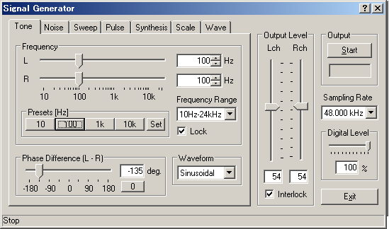
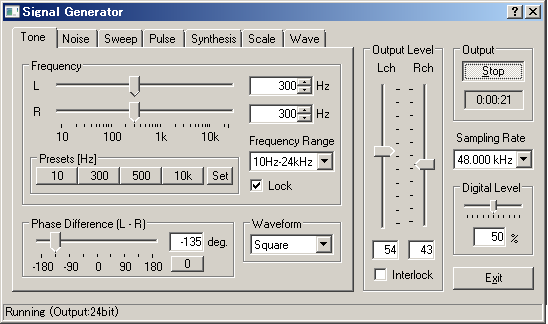
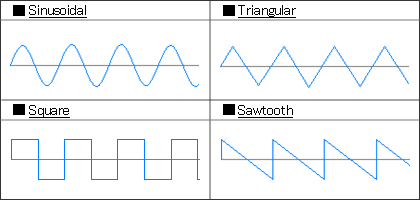

DSSF3 > RA > Reference Manual > Signal Generator


| Item | Description |
|---|---|
| Frequency | Specify a frequency by the numerical value or by the slider. When the [Interlock] box is checked, left and right channels are set equal. |
| Presets | Frequency of output signals can be saved as presets. To save the presets, click the "Set" button. Then specify the frequency by the slider or by entering the value. Finally click one of four presets buttons. Once the frequency is saved as a preset, the frequency is shown on the preset button. Default presets are 10, 100, 1k, and 10k Hz. |
| Frequency Range | Select the frequency range from the list. Then the range of the slider is changed. |
| Phase difference | Set the phase difference (Left - Right) between two channels in the range between -180 and +180 degree. |
| Waveform | Choose the waveform of output sound from [Sinusoidal], [Triangular], [Square] and [Sawtooth]. Arbitrary waveform stored in the "Wave" tab can also be selected. |

DSSF3 > RA > Reference Manual > Signal Generator